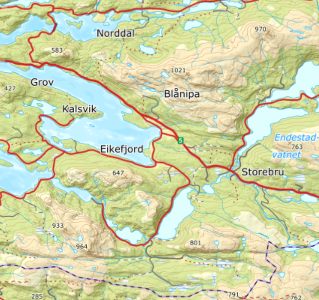
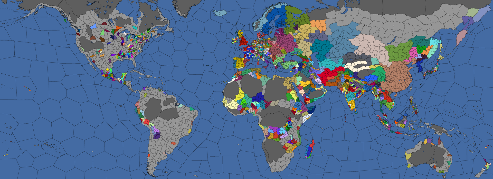
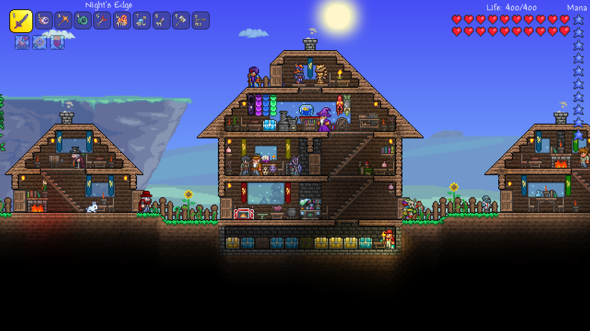

Mathias Alexander Øren Banne

Eg heiter Mathias, og eg er 19 år gamal.
Eg blei oppvokst i Eikefjord, ein liten bygd innan ein liten fjord ved byen Florø.
Eg drar på IKT ved HVL (Høgskulen på Vestlandet), i campus Bergen.
Eg liker å spele videospel, mest PvE enn PvP, og spesielt strategi-spel som EU4 og andre spill som Stardew Valley, Terraria og Minecraft.
Eikefjord
Eikefjord er ein liten bygd på rundt 450 folk, i følge SSB er det 441(Kjelde)
Eikefjord er den sentrale plassen for område, som gjør det viktig for samfunnet rundtom.
Akkuratt som alle bygdar har Eikefjord og området rundt mykje historie som ein lese meir
her (det er ein ekstern side)

Kjelde til kartet
Spill som eg liker
EU4
EU4 (Europa Universalis 4) er eit strategi spel laga av Paradox Interactive.
I spelet spelar ein som eit land ifrå årtallet 1444, og kontrollerer alle aspekt ved å styre eit land innan den tida, med mykje variasjon mellom forskjellege land, religionar og kontinentar.

Terraria
Terraria er eit 2D eventyr spel kvor ein sloss imot mange ulike monster og vessen, bygger bygg og mykje meir.
Hovedsakleg handlar spelet om å vinne over ulike monster for å skaffe betre ting til å så drepe større vessen heilt fram til den siste, Moon Lord.
